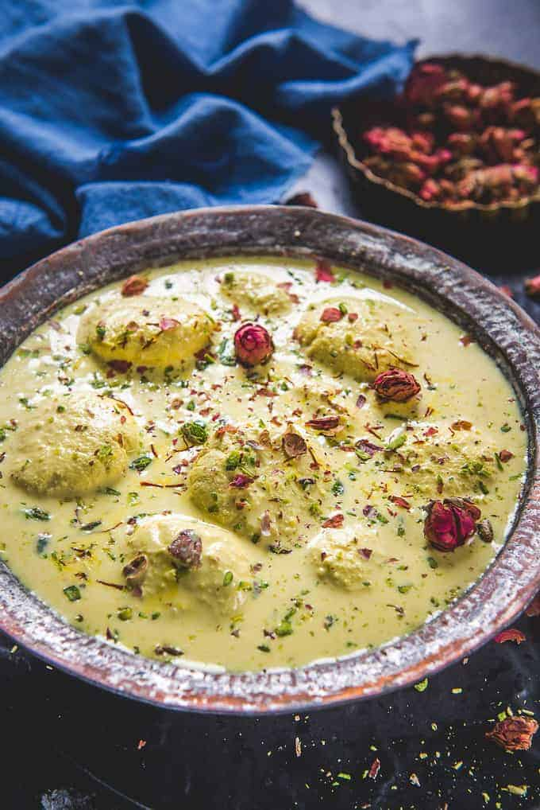

MILKCAKE
Milk cake is a traditional Indian sweet made from milk, sugar, and ghee, often flavored with cardamom. The milk is reduced until it thickens and solidifies, then sweetened and cooked to a caramelized consistency. It has a soft, grainy texture and a rich, creamy taste, perfect for festive occasions.
INGREDIENTS:
- Milk
- Sugar
- Ghee
- Cardamon
PROCESS :
- Boil milk and reduce it to a thick consistency.
- Add sugar and continue cooking until the mixture solidifies slightly.
- Add ghee and cook until the mixture turns golden brown and starts leaving the sides of the pan.
- Pour into a greased tray, let it cool, and cut into pieces.
TASTE
Rich, creamy, and slightly caramelized with a grainy texture.
KAJU KATLI
Kaju Katli is a popular Indian sweet made from cashew nuts, sugar, and ghee. The cashews are ground into a fine powder, mixed with sugar syrup, and cooked until a dough forms. It's then rolled thin and cut into diamond shapes. Kaju Katli has a smooth, rich, nutty flavor.
INGREDIENTS:
- Cashews
- Sugar
- Water
- Saffron
PROCESS :
- Grind cashews into a fine powder.
- Prepare sugar syrup by boiling sugar and water until it reaches a single-thread consistency.
- Mix the cashew powder into the syrup and cook until the dough forms.
- Roll out the dough thinly and cut it into diamond shapes.
TASTE
Smooth, nutty, and mildly sweet, with a melt-in-the-mouth texture.
RASMALAI
Rasmalai is a classic Indian dessert made of soft, spongy paneer (cottage cheese) balls soaked in sweetened, thickened milk flavored with cardamom and saffron. The dish is garnished with chopped pistachios and almonds, giving it a rich, creamy texture and a delicate sweetness. It's often served chilled on festive occasions.
INGREDIENTS:
- Panner
- Milk
- Sugar
- Saffron
- Cardamon
- Pistachios and almonds
PROCESS :
- Boil milk until it thickens slightly, then add sugar, cardamom, and saffron.
- Add flattened paneer balls (or Rasgullas) into the milk mixture and let them absorb the flavors.
- Chill in the fridge and garnish with chopped pistachios and almonds.
TASTE
Creamy, soft, and mildly sweet with aromatic saffron and cardamom flavors.